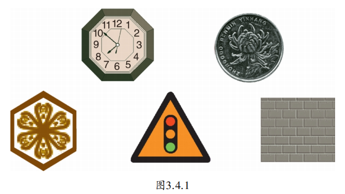
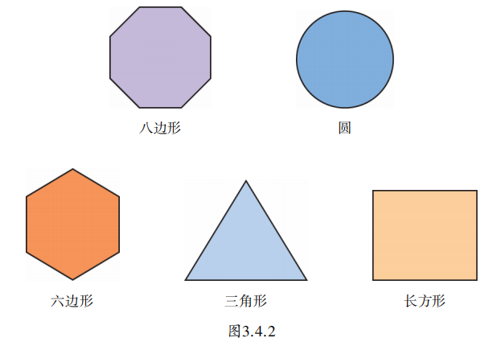
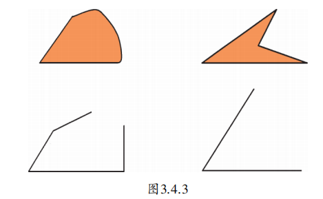
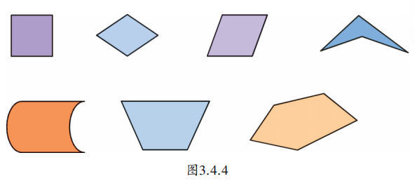
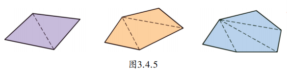
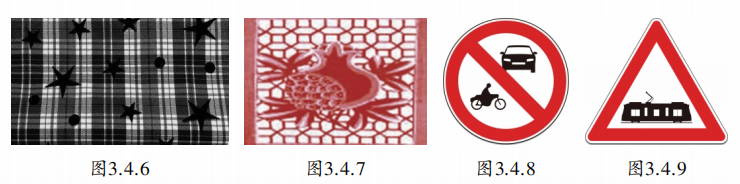
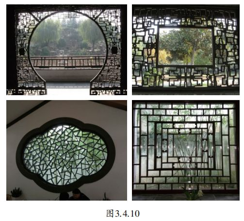
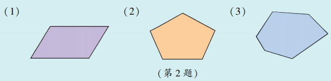

通过前几节的学习，我们认识了由实际生活中所存在的各种物体抽象而成的许多立体图形，其中不少立体图形都是由平面图形围成的，而且可以通过某些平面图形描述它们的形状和特性，因此研究立体图形往往从平面图形开始。
观察图3.4.1中所示的各物体，你能画出它们的表面轮廓线的形状吗？

把你画的图形和图3.4.2所示的图形相比较，看看你所画的是否也是这几个平面图形？

这里的三角形、长方形和圆是我们早就熟悉的图形。圆（circle）是由曲线围成的封闭图形，而其他由线段围成的封闭图形叫做多边形（polygon）。按照组成多边形的边的条数，多边形可分为三角形（三边形）、四边形、五边形、六边形……
图3.4.3中的几个图形是多边形吗？

图3.4.4所示的图形中，哪几个是四边形？说说“是”或“不是”的理由。

在多边形中，三角形是最基本的图形，如图3.4.5所示，每个多边形都可以分割成若干个三角形。

数一数图3.4.5中每个多边形所分割成的三角形个数，你能发现什么规律？
生活中，经常可以看到由一些多边形或圆组成的优美图案。图3.4.6至图3.4.9是一些布料和交通标志等的图案，请你在照片上找一找你熟悉的平面图形。

图3.4.6中有长方形、正方形、五角星形和圆；图3.4.7中有长方形、六边形和八边形；图3.4.8中有长方形、梯形和圆；图3.4.9中有三角形和长方形。
如图3.4.10所示，古典园林里一些窗格的图案中，有不少简单的几何图形，试找出这些图形。

1. 分别举出有一个表面是圆和有一个表面是四边形的两个物体的例子。
2. 按照图3.4.5的方式分割下面的多边形，使其由多个三角形组成。

抽象思想： 从物体表面轮廓抽象出平面图形（圆、多边形）。
分类思想： 按边数对多边形进行分类。
转化思想： 将多边形分割为三角形，化繁为简。
几何直观： 从生活图案中识别图形，感受数学之美。
七巧板是我国古代的一种智力玩具，由七块板组成：5个等腰直角三角形（2大、1中、2小）、1个正方形和1个平行四边形。用这七块板可以拼出千变万化的图形，如人物、动物、建筑等。七巧板蕴含了丰富的几何关系——面积、角度、边长，是培养空间想象力和创造力的绝佳工具。你能用七巧板拼出三角形、长方形吗？试试看！
✨ 从具体到抽象，用数学的眼光看世界 ✨